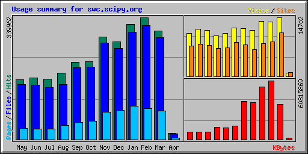

Summer Plans for Software Carpentry
The Software Carpentry site is still getting a lot of traffic, despite my neglect:

This summer, I’d like to:
- Convert the site from static HTML pages to a wiki to make it easier for people to contribute content and fix bugs.
- Translate the examples into MATLAB to make them accessible to a larger audience. (Yes, Python is still my favorite language, and yes, the Python versions will remain—I just want it to be possible for the average mechanical engineer to follow the discussion of testing without first having to learn a new programming language).
- Add some of the material that I developed for CSC301: Introduction to Software Engineering, and some of what Titus Brown wrote for Intermediate and Advanced Software Carpentry.
The odds of all three happening are close to zero: my grad students are going to be in the middle of real research, we’re hoping to have half a dozen or ten undergraduate interns as well, we have a “CS-1 in Python” book to finish for Pragmatic, and oh yeah, I’m getting married twice. If you want to help out, now would be a good time to raise your hand… :-)